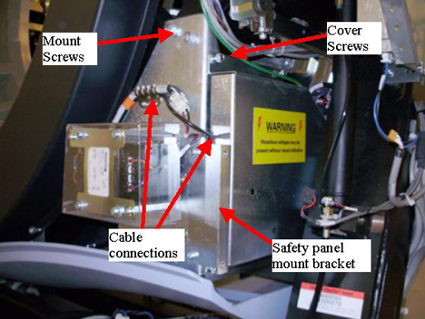
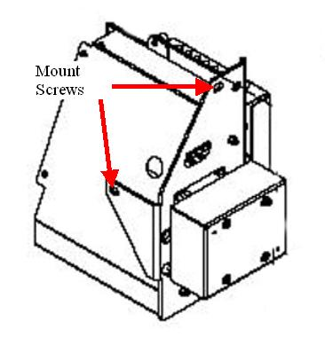

Operating Documentation
Direction 5193574-800, Rev# 22
LightSpeed 7.X Service Methods
Module Version 2.0, Version Date 12/7/09
Operating Documentation |
| Required Persons | Preliminary Reqs | Procedure | Finalization |
|---|---|---|---|
| 2 | Not Applicable | 90 mins | 10 mins |
This procedure describes the proper method for safe access to the components of this assembly. Always use proper service practices in ESD, power control, and assembly/disassembly procedures. Verify all connections are correct and tightened prior power application.
| Last Revised: | October 13, 2008 |
| Item | Qty | Effectivity | Part# | Manufacturer | |
|---|---|---|---|---|---|
| Standard FE Tool Kit | 1 | - | - | - | |
| 5 mm and 10 mm hex head sockets | 1 | - | - | - | |
| 5 mm hex wrench | 1 | - | - | - | |
| Torque Wrench Kit (5135228 or equivilent) | 1 | - | - | - | |
| Item | Qty | Effectivity | Part# | Manufacturer |
|---|---|---|---|---|
| Tie-wraps | - | - | - |
| Item | Qty | Effectivity | Part# | Manufacturer | |
|---|---|---|---|---|---|
| Axial Dynamic Braking Module | 1 | - | 5118577-2 | - | |
| ||||
| Follow ALL required safety and PPE procedures customary for your organization, when working on this product. | ||||
| Condition | Reference | Effectivity |
|---|---|---|
Only trained service personnel should service the GE CT Scanner. | - | - |
Move table to its lowest elevation.
Remove gantry right side cover.
Refer to Replacement → Gantry → Enclosure → (Cover Removal Procedures).
Turn OFF the Axial Drive and HVDC switches on the gantry’s Service Switch Panel.
Rotate the gantry to position the tube at about the 6 o'clock position such that you can look in from the front of the gantry and have easy access to the back of the dynamic brake assembly.
Turn OFF the 120 VAC switches on the gantry’s Service Switch Panel.
| ||||
| Electrocution hazard. | ||||
| High Voltage present. | ||||
| Turn off HVDC. Use proper lockout/tagout procedures before servicing components. |
Perform all required LOTO activities to remove all power to the gantry.
Remove the gantry left side cover, top covers and rear cover.
Remove the gantry tilting assembly bottom cover.
Remove the left side tilting safety panel next to the dynamic brake module by removing the screws using a 5 mm hex wrench.
Remove the safety panel mount bracket from the dynamic brake module by removing the two screws. See Illustration 1.
Illustration 1: Axial Dynamic Brake Assembly

Loosen four (4) captive cover screws located on the side metal cover of the dynamic brake assembly to access the one cable connection inside the assembly. Reference Illustration 1.
Remove all cable connections from the assembly and any brackets holding cables to the assembly
Remove the brake assembly as follows.
Using a 10mm hex bit socket, remove the mount screw behind the assembly by reaching in from the front of the gantry. Shift gantry as needed for access.
Have the second person support the assembly to prevent it from falling when removing the last two screws.
Remove the last two screws located at the top of the dynamic brake assembly and remove the assembly from the gantry.
Illustration 2: Mount Screw locations

Replace the Axial Dynamic braking module in reverse order, having the second person hold the assembly while installing the two screws. Then install the third screw from the front of the gantry.
Torque the three mounting screws to:
Table 1: Axial Drive Mount screws Torque
| 66 N-m | 49 lb-ft | 588 lb-in | 677 kg-cm |
Make sure all cable connections are connected including the one internal to the module. Reference Illustration 1.
Install the safety cover mount bracket to the dynamic brake.
Install the gantry tilting assembly base cover and the tilting safety cover next to the braking module.
Install the gantry rear cover, top covers and left side cover.
Refer to Replacement → Gantry → Enclosure → (Cover Removal Procedures).
Remove LOTO and restore power to system.
Enable 120 VAC HVDC and Axial Drive service switches from the service switch panel. Press the table drives enable button on the lower right corner of the service switch panel.
Install the gantry right side cover.
Perform a [System Scanning Test] from the [Functional Checks] menu of the service manual to ensure system operation.